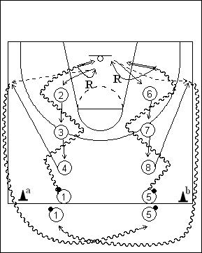

Catégorie : DRIBBLE (Dr-011)
Déroulement
- Deux files de joueurs avec ballons au niveau de la ligne médiane. Trois joueurs devant chacune de ces files, un à mi-chemin entre la ligne médiane et une ligne des trois points, un au niveau de la ligne des trois points et un sous la ligne des lancers-francs.
- Les premiers joueurs 1 et 5 partent en dribble très rapide autour des trois joueurs situés devant eux et terminent par un lay-up. 1 effectue son propre rebond et passe à 4 venu appeler le ballon à hauteur de la ligne des lancers-francs; idem pour 5 avec 8.
- Après son lay-up, le joueur 1 va en 2, 2 va en 3, 3 va en 4 et 4 contourne le cône a en dribble et va dans la file 5. Idem pour 5 qui va en 6, 6 en 7, 7 en 8 et 8 va en dribble dans la file 1 en passant derrière le cône b.
Coaching points
- Le rythme doit être constamment très soutenu, les vagues de deux joueurs partant dès que les joueurs précédents ont effectué le rebond et la passe de dégagement.